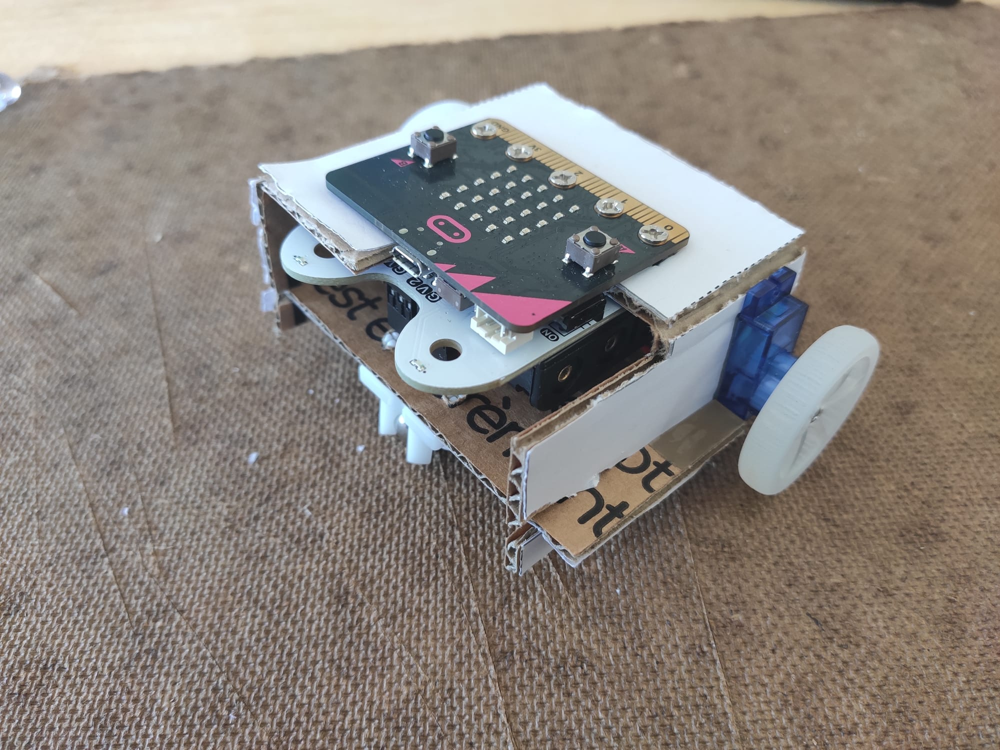

Designing a robot
In the previous days we learned how to control a robot, to make it move, to add sensors to its controller, but we did not yet manage to have what we could call an autonomous robot. Today you will learn how to make this possible.
Question
With everything you learned so far and the material at hand, do you think that you could put together an autonomous mobile robot that will explore it's surrounding while avoiding obstacles ?
Answer
Yes you might be able to. Indeed, while you can't connect the HC-SR04 and 2 motors on the buggy board, you can connect the ultrasonic sensor on one board and two motors on another board and make the two board communicate. The problem is that the robot frame of the buggy does not allow that. Today you'll learn how to start prototyping andd building your own frames to solve such problems.
What you will need
Every pair of learners will need:
- A computer equipped with a connection to internet and a browser (ideally Chrome),
- One micro:bit,
- A usb cable to connect the micro:bit to the computer,
- One bit:buggy kit,
- Some cardboard,
- A ruler,
- A cutter.
Cardbot
| Disassemble the buggy | Glue the simple plan | Cut the parts | Mount the universal wheel |
|---|---|---|---|
| Assemble the wheels on the motors | Mount the buggy board | Fit the motors and plug them | Assemble the top and bottom parts |
|---|---|---|---|
|  |
Figure: Mounting the cardbot. If you do not have the print of the cardbot plan, you can download it here.
{kind=link}
You will start to learn how to design a cardboard robot. While cardboard is neither noble nor durable, it is a great tool to prototype and to learn the mecanical constraints in play in the designing process. By manipulating cardboard parts in your hands, you will also prepare yourself to manipulate them virtually while using computer aided designing softwares, which will be the topic of this afternoon.
Exercise 1
- 1.1. Build the cardbot by following the instructions given in the image above. Note that when disassembling the buggy, a good practice is to put the discarded elements back in the buggy box, taking care of putting the screws back in their plastic bags.
- 1.2. Once the cardbot is built, test it using the program to make the robot climb a slope.
- 1.3. As a designer, you'll have to pay attention to how user friendly your robot is. Is this design user friendly ? Can you for instance easily switch it on and off ? Could you improve the design ?
Obstacle avoiding robot design
In the previous activity, you became more familiar with the use of cardboard to prototype and build. You will now build upon what you just learnt and propose your own design to solve the original problem: build an obstacle avoiding robot.
In terms of electronics, you'll need to fit on the frame one micro:bit to do look for obstacles using the HC-SR04 and the potentiometer (as in monday's afternoon activity) and one equipped with the motor to take care of the displacement. The "seeing micro:bit" will send it information to the "leg micro:bit". For this, there is a proposed design at your disposition, but try first to not use it and come up with your own design as proposed in the following exercise.
Exercise 2
- 2.1 Design: design (without building) a new cardboard frame for your robot to be able to mvoe and sense obstacles. For this we recommend you to use a pen and paper, but you could also use an online tool such as Method of Action which allows you to design in vectorial format (and if you have a printer and you know it well you could print something simmilar what we provided you with and make the building process easier).
- 2.2 Build: Choose among your design and the one proposed printed design which of the two you prefer and build it.
- 2.3 Program: Program the mobile robot to move forward when there is no obstacle closer than 10 cm and stop otherwise.
- 2.4 Program (optional): Program the robot to explore the environment while avoiding obstacles.
{kind=link}
Conclusion
This morning you learned how to design and build a robot frame with simple material. While there is a lot to learn in the field of mecanics, the theory is based on some strong fundations in physics and geometry. However, there si no need to get involved in the theory too hurly. You can already learn a lot of practical knowledge in doing what you did this morning, and this will only makes you learn the theory more easily later if you are interested in this field.